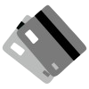
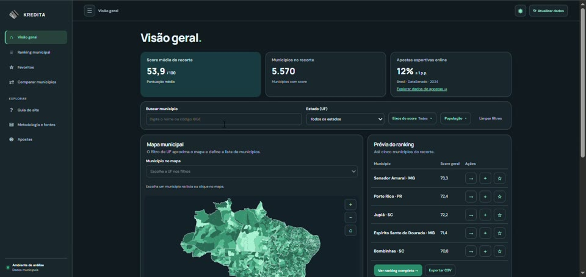

KREDITA

Minha contribuição · Product Owner
Atuei como Product Owner, contribuindo criativamente para o projeto e para a organização da equipe. Pesquisei indicadores e APIs públicas e participei da normalização dos dados e do cálculo do score.
Também contribuí para a criação do banco de dados do projeto, o design do site, a documentação dos dados no GitHub e em PDF e a atualização do Jira.
Principais ferramentas
 Python
Python HTML
HTML CSS
CSS Docker
Docker Jira
Jira- SQLite
O problema
As análises tradicionais de crédito nem sempre representam o potencial de consumo e a capacidade de pagamento de populações historicamente recusadas por grandes instituições financeiras. O desafio é compreender as condições econômicas e financeiras das regiões para apoiar decisões de crédito mais inclusivas.
A solução
Uma aplicação web para analisar indicadores públicos de risco de crédito, capacidade financeira, inclusão financeira e demografia. A proposta reúne visualizações e um score regional para apoiar a análise e a comparação de regiões.